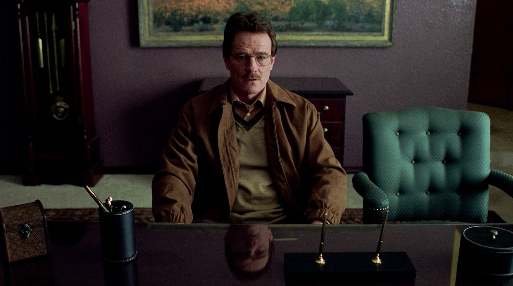
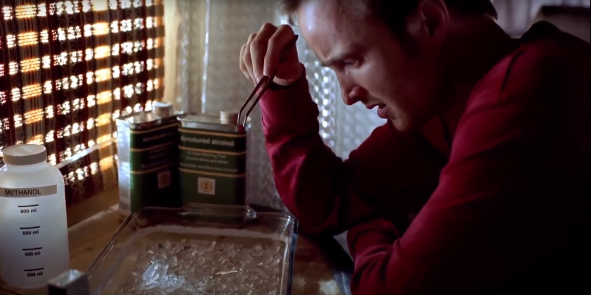
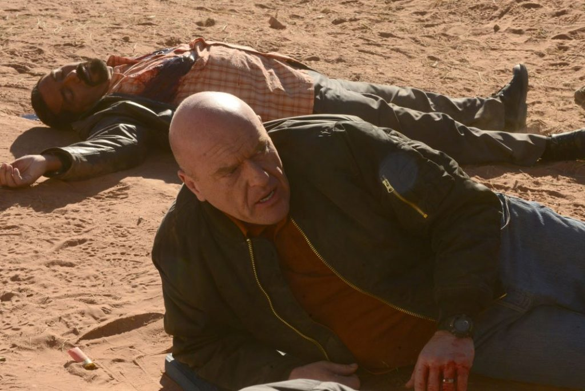

Breaking Bad

Breaking Bad is on my top shows list because it is extremely exciting and the story is absolutley amazing. When you watch the show for the first time, you have no idea what to expect or not to expect. Everything is a surprise, and nearly every episode ends leaving the viewer desperate for more. The show is also written in a fantasic manner, the forshadowing and connection of events are truly stunning once revealed to the viewer. The last 3 episodes of this show are all possible endings, however they are written to flow together as one. These small "easter eggs" in the show are what make it such a great watch. The symbolism in the show is also extrodinary. As Walter's moral character dies, his appearal loses color and turns black over time. All of these small pieces sum together to create a phenominal TV Show.
Top 3 Scenes...
Walter's Diagnosis
In this scene Walter zones out and ignores what the Doctor is telling him. He is only focused on the fact that the Doctor has mustard on his shirt from his lunch. This scene when analyzed shows the beginning of Walter's decline. It is here where he loses the first set of morals. This loss allows him to justify manufactuirng and distrubiting a schedule II substance.
Walter and Jesse's first cook
In this scene Walter's chemistry skills are showed off for the first time. In the camper Walter produces the best meth that Jesse, a long time abuser of the substance has seen. Jesse says "This is pure glass grade! this is art yo!" This is the orignal starting point of the illegal business venture Walter and Jesse go on.
Hank's Death
At this point in the show Walter has 0 morals. He has killed, lied, and broke the law time and time again. When his brother in law that has been hunting him is killed, it is a very emotional and dramatic part of the show. Hank says "Walt, you're one of the smartest people that I ever met, but you too stupid to see that he made up his mind 10 minutes ago". After this Hank is shot and killed and Walter hits the ground.